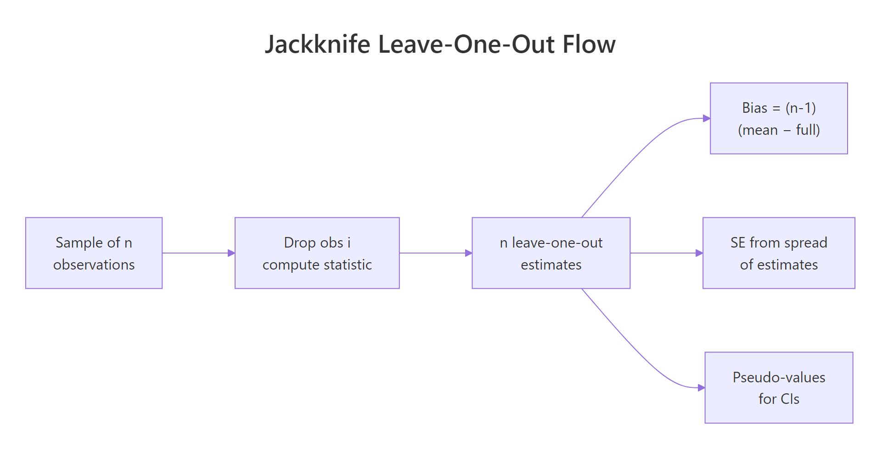
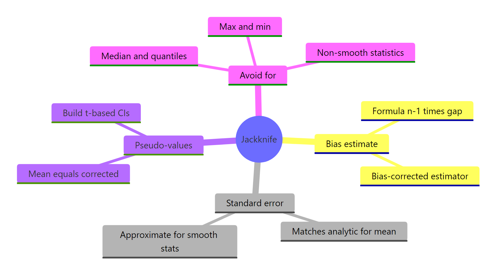

Jackknife Resampling in R: Leave-One-Out Bias Correction
Jackknife resampling estimates the bias and standard error of a statistic by recomputing it on n leave-one-out subsamples: drop one observation, recompute, repeat. In base R, the whole machine is a five-line loop, and it returns the same standard error you would get from textbook formulas.
What is jackknife resampling, and how does it work?
The recipe is mechanical. Take a sample of n observations. Drop the first one and compute your statistic on the remaining n-1. Put it back, drop the second, repeat. After n passes you have n leave-one-out estimates, and their spread tells you how stable the original estimate is. Let's see this on the mean of mtcars$mpg, where the analytic standard error is already known.
The two standard errors agree to every decimal. That is not a coincidence: for the sample mean, the jackknife formula reduces algebraically to sd(x)/sqrt(n). This match is the sanity check that anchors the rest of the method, and it works without us having to write down a single distributional assumption.

Figure 1: How n leave-one-out samples produce n estimates and one summary.
The math behind jack_se is a single formula:
$$\text{SE}_\text{jack} = \sqrt{\frac{n-1}{n} \sum_{i=1}^{n} \left( \hat\theta_{(-i)} - \bar{\theta}_\text{jack} \right)^2}$$
Where:
- $\hat\theta_{(-i)}$ = the estimate computed on the sample with observation $i$ removed
- $\bar{\theta}_\text{jack}$ = the average of those
nleave-one-out estimates - The
(n-1)/nfactor inflates the spread to compensate for the high correlation between leave-one-out subsamples (they overlap inn-2observations).
Let's wrap that loop in a tiny reusable function, since we'll need it again for bias and confidence intervals.
The helper returns the original estimate, all n leave-one-out values, their mean, and the jackknife standard error. We'll reuse it across every section without rebuilding the loop.
Try it: Use jack() to estimate the standard error of the median of mtcars$wt. Print the SE.
Click to reveal solution
Explanation: jack() plugs median into the same loop. Hold on to this number, we'll see in the last section that the jackknife standard error for the median is unreliable for a different reason.
How do you estimate bias with the jackknife?
A statistic is biased if its expected value over repeated sampling differs from the true population value. The jackknife estimates that bias from a single sample using a striking formula:
$$\text{bias}_\text{jack} = (n-1) \left( \bar{\theta}_\text{jack} - \hat\theta \right)$$
Where:
- $\hat\theta$ = the estimate on the full sample
- $\bar{\theta}_\text{jack}$ = the average of the
nleave-one-out estimates
The bias-corrected estimator is then:
$$\hat\theta^{*}_\text{jack} = n\hat\theta - (n-1)\bar{\theta}_\text{jack}$$
A clean place to test this is the textbook biased variance: dividing by n instead of n-1 is known to underestimate the population variance by exactly $\sigma^2/n$. The jackknife should detect that bias and undo it.
The corrected estimate matches var(x) exactly. The jackknife discovered the 1/n versus 1/(n-1) mistake on its own, with no knowledge of the analytic correction. The bias estimate is negative because the naive estimator underestimates the true variance.
The same technique works for statistics whose bias has no clean closed form, like Pearson's correlation, which is mildly biased toward zero in small samples.
The bias is small, around three thousandths, but it consistently pushes the estimate toward zero. The corrected value is very slightly more negative, in line with the well-known small-sample bias of cor(). With n = 32 you would not lose sleep over the gap, but with n = 10 the same correction can move an estimate by 0.05 or more.
n is small or when bias is the metric you actually care about, and skip it for everyday use.Try it: Take the mtcars$mpg mean and add an artificial bias by writing biased_mean <- function(v) mean(v) + 5. Use jack() plus the formula n*theta - (n-1)*jack_mean to recover the unbiased mean.
Click to reveal solution
Explanation: The constant offset shifts every leave-one-out estimate by the same amount, so the bias formula reads off exactly 5 and the correction subtracts it back out. That is also why the jackknife is exact for additive biases.
How do you compute the jackknife standard error and confidence intervals?
The jackknife also produces something more useful than the SE alone: pseudo-values. For each observation i, the pseudo-value is
$$\varphi_i = n\hat\theta - (n-1)\hat\theta_{(-i)}$$
Pseudo-values have two friendly properties. Their mean is the bias-corrected estimator. And, when the statistic is reasonably smooth, they behave like approximately independent draws, so their sample standard deviation divided by sqrt(n) gives a standard error and the t-distribution gives a confidence interval.
Let's apply this to skewness, a statistic with no clean analytic SE.
The skewness of mtcars$mpg is about 0.61, mildly right-skewed. The jackknife says the bias-corrected skewness is essentially the same, with a 95 percent confidence interval that brushes against zero. In other words, with n = 32 you cannot rule out a symmetric distribution from this sample alone.
The same answer comes out of jack() once you note that pseudo-value SE equals jackknife SE divided by sqrt(n-1)/sqrt(n):
The two routes give the same number. Pseudo-values are just the lens that turns leave-one-out estimates into something a t-test would accept.
e1071 package offers three variants, and moments::skewness() uses yet another. Pick one and report it. The jackknife procedure works the same way regardless of which one you choose.Try it: Build a 95 percent jackknife confidence interval for the coefficient of variation (sd(v)/mean(v)) of mtcars$hp. Use the pseudo-value approach above.
Click to reveal solution
Explanation: The CV is roughly 0.55 in the full sample. The jackknife CI says the population CV is somewhere between 0.43 and 0.66, narrow enough to be informative.
When does the jackknife fail (and what to use instead)?
The jackknife is, mathematically, a linear approximation of the bootstrap. It works well when the statistic is a smooth function of the data: changing one observation moves the estimate by a small, continuous amount. It breaks for statistics that respond to single observations in jumps, and the median is the textbook offender.
There are only two distinct leave-one-out medians, and they differ by a tenth of a unit. The jackknife sees almost no spread and reports a tiny standard error. The bootstrap, which can resample the same observation multiple times, sees the real variability and returns an SE three times larger. For a sample with n = 32, three times is not a rounding error.
Try it: Apply the jackknife to max(mtcars$hp). Look at how many distinct leave-one-out values there are, and explain why the jackknife SE is misleading.
Click to reveal solution
Explanation: Removing the single largest observation drops the max from 335 to 264, every other leave-one-out leaves the max at 335. With only two values, the jackknife reports a tiny SE that severely understates the real sampling uncertainty in max(). The bootstrap is the right tool here.
Practice Exercises
Exercise 1: Trimmed-mean SE on airquality
Use the jackknife to estimate the standard error of the 10 percent trimmed mean of airquality$Wind. Save the result to tm_jack and print its $se.
Click to reveal solution
Explanation: The trimmed mean is smooth enough for the jackknife to be reliable, so the SE is trustworthy. Compare with sd(aw)/sqrt(length(aw)) to see how much trimming costs you in precision.
Exercise 2: A reusable jackknife CI function
Write a function jack_ci(v, statistic, conf = 0.95) that returns a list with value, se, and a t-based confidence interval built from pseudo-values. Test it on mean of mtcars$mpg.
Click to reveal solution
Explanation: The function returns the bias-corrected estimate (mean of pseudo-values), the standard error, and a t-CI in three lines of pseudo-value algebra. Drop in any statistic that takes a numeric vector.
Exercise 3: Influential observations from pseudo-values
Pseudo-values reveal which observations have outsized influence on a statistic. Compute pseudo-values for the mean of iris$Sepal.Length and flag any observation whose pseudo-value differs from the average by more than 2 standard deviations. Save the row indices to flagged.
Click to reveal solution
Explanation: Roughly nine observations sit more than 2 SD away from the average pseudo-value. Three of those are the small Setosa flowers near row 14, the rest are the large Virginica flowers later in the dataset. Pseudo-value diagnostics generalize this idea to any smooth statistic, not just the mean.
Complete Example
End-to-end workflow: estimate the skewness of airquality$Ozone (with NAs removed), build a jackknife confidence interval, and check the bias correction against the naive estimate.
The naive skewness is about 1.21, strongly right-skewed, which is unsurprising for ozone concentrations. The bias correction nudges the estimate slightly upward to 1.23, and the 95 percent CI is well clear of zero. We can confidently report ozone concentrations as right-skewed, and we have a defensible interval to back it up, all from a sample of 116 observations and a 20-line R workflow.
Summary

Figure 2: What the jackknife gives you, and where it falls short.
| What you want | Jackknife formula |
|---|---|
| Standard error | $\sqrt{\frac{n-1}{n}\sum (\hat\theta_{(-i)} - \bar\theta_\text{jack})^2}$ |
| Bias estimate | $(n-1)(\bar\theta_\text{jack} - \hat\theta)$ |
| Bias-corrected estimate | $n\hat\theta - (n-1)\bar\theta_\text{jack}$ |
| Pseudo-value | $\varphi_i = n\hat\theta - (n-1)\hat\theta_{(-i)}$ |
| Confidence interval | $\bar\varphi \pm t_{n-1,\alpha/2} \cdot \mathrm{sd}(\varphi)/\sqrt{n}$ |
Use the jackknife when your statistic is smooth (means, ratios, regression coefficients, correlations, log-likelihoods). Reach for the bootstrap when it is not (medians, quantiles, max, min, anything with a min/max/sort step in the middle).
References
- Quenouille, M.H. (1949). Approximate tests of correlation in time series. Journal of the Royal Statistical Society B, 11, 68-84.
- Tukey, J.W. (1958). Bias and confidence in not-quite large samples (abstract). Annals of Mathematical Statistics, 29, 614.
- Efron, B., Tibshirani, R.J. (1993). An Introduction to the Bootstrap. Chapman & Hall, ch. 11.
- Shalizi, C. (2023). Jackknife notes, CMU Stat 36-490. Link
- Wikipedia: Jackknife resampling. Link
- Zivot, E. Introduction to Computational Finance and Financial Econometrics with R, ch. 8.5. Link
- Sawyer, S. (2005). Resampling Data: Using a Statistical Jackknife. Washington University. Link
- Joanes, D.N., Gill, C.A. (1998). Comparing measures of sample skewness and kurtosis. Journal of the Royal Statistical Society D, 47(1), 183-189.
Continue Learning
- Bootstrap in R, the resampling sibling that handles non-smooth statistics where the jackknife fails.
- Bootstrap Confidence Intervals in R, for when the t-CI on pseudo-values is not enough and you need percentile or BCa intervals.
- When to Use Nonparametric Tests in R, the broader nonparametric toolkit that resampling methods sit inside.